巨大すぎて人間では監査不能なコードベース
Google / Microsoft / Mozilla / Apple / Cisco など、世界の根幹を支えるベンダーの数千万行規模のコードは、人間レビュアーの限界を超えている。Glasswing は網羅的解析で抜け漏れを物理的にゼロへ近づける。
Project Glasswing · AI 時代のサイバー防衛革命 · Issue № 05/23
脆弱性を「見つける」コストを攻撃側 AI がゼロにした瞬間、防御側に残されていた「発見から攻撃コード生成までの数分」という獲得猶予期間（Grace Period）は消滅した。Anthropic Project Glasswing は、攻撃 AI が一般化する前に世界の重要ソフトウェアを「防御側が先に硬化させる」ための、壮大な時間稼ぎプロジェクトである。
Claude Mythos Preview（100 万トークン大規模コンテキスト + Adaptive Thinking）× 1,000+ OSS プロジェクトでの 23,019 件所見 × 真陽性率 90.6% × Firefox 150 で前モデル比 10 倍の 271 件修正 × 150 万ドル不正送金エクスプロイトの未然防止 × 約 18 ヶ月の Safe Zone × 修正の工業化（AI パッチ合成 → 到達可能性分析 → 自動検証）。
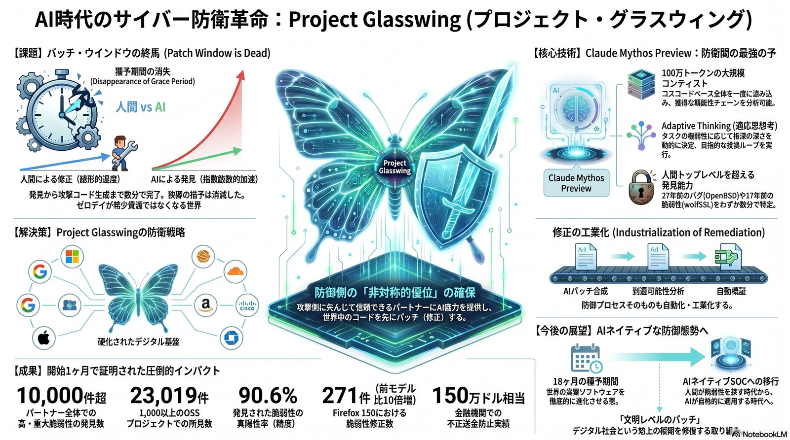
これまでは「脆弱性を見つけるのが困難」だった。しかし、AI がそのコストをゼロにした今、パッチを当てる前に攻撃者が指数関数的にエクスプロイトをばら撒く世界が到来する。Glasswing は、攻撃 AI が世界に到達する前に「世界中のコードを先にパッチする」非対称的優位を取りに行く。
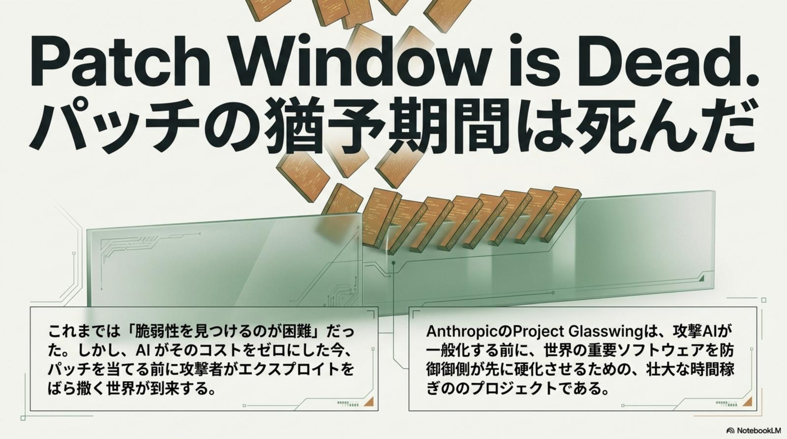
Glasswing は単なるセキュリティ製品ではない。デジタルの地盤沈下を防ぐため、基幹インフラ提供者 / OSS メンテナ / エンタープライズ SOC という 3 つの層が抱える「絶望的なボトルネック」を同時に解消するエコシステム防衛である。
Google / Microsoft / Mozilla / Apple / Cisco など、世界の根幹を支えるベンダーの数千万行規模のコードは、人間レビュアーの限界を超えている。Glasswing は網羅的解析で抜け漏れを物理的にゼロへ近づける。
世界を支える数十万の OSS メンテナは、低品質な AI 生成バグ報告のフラッディングでレビュー帯域が枯渇しつつある。Glasswing は高精度トリアージで「読むに値する報告」だけを残し、信頼を取り戻す。
銀行 / 医療 / 通信への脆弱性探索コストがゼロになると、「見つける」だけでは不十分。事業影響を判断し安全にパッチを展開するプロセスが追いつかなくなる——その間に防御の先行優位を獲得する。
大量の AI 生成報告は、誤検知（False Positive）と本物のゼロデイを区別する人類の能力を上回りつつある。Glasswing は真陽性率 90.6%という人類アナリスト級の指標で、生のシグナルを取り戻す。
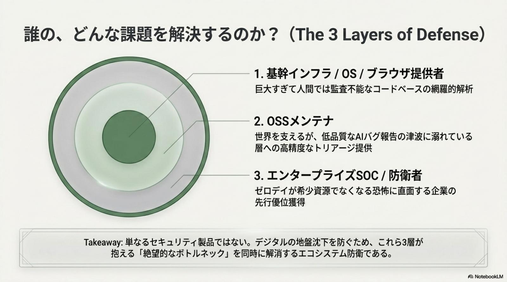
勝負を分けるのは、もはや「誰が先に脆弱性を見つけるか」ではない。AI が見つけたものを、安全に・大量に・人間より速く修正できるかこそが、AI 時代の防御における唯一のレバーだ。
特筆すべきは 修正の工業化（Industrialization of Remediation）だ。Mythos が見つけた脆弱性をそのままパッチ合成パイプラインに流し、到達可能性分析で「実際に攻撃経路として成立するか」をフィルタし、サンドボックスで自動検証。人間レビュアーが介在する点を「事業判断」だけに絞り、防御プロセス全体を流れ作業化する。
Glasswing の中核は Claude Mythos Preview。100 万トークンの大規模コンテキストでコードベース全体を一度に読み込み、Adaptive Thinking でタスクの難易度に応じて推論深度を動的に決定。OpenBSD の27 年前のバグや wolfSSL の17 年前の脆弱性まで特定する、人類トップレベルを超えた発見能力を持つ。
Mythos は単なる脆弱性スキャナではない。100 万トークンの一度読みで獲得可能性チェーンを丸ごと分析し、Adaptive Thinking が必要な箇所だけに「深く考える」予算を集中投下。発見した脆弱性は、AI パッチ合成 → 到達可能性分析 → サンドボックス自動検証の3 工程パイプラインに直行する。人間は「事業影響の判断」だけに専念できる構造だ。
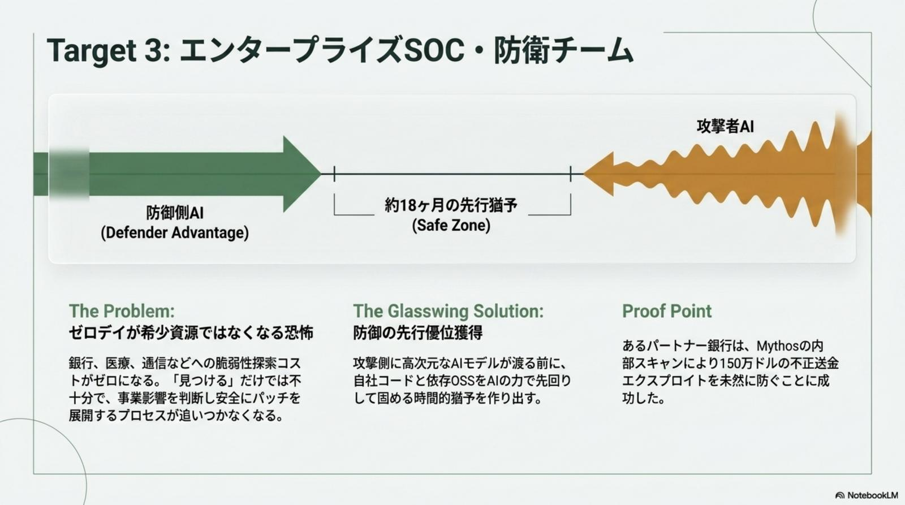
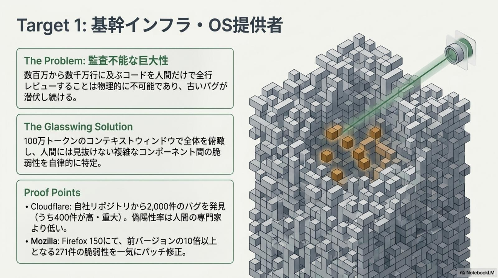
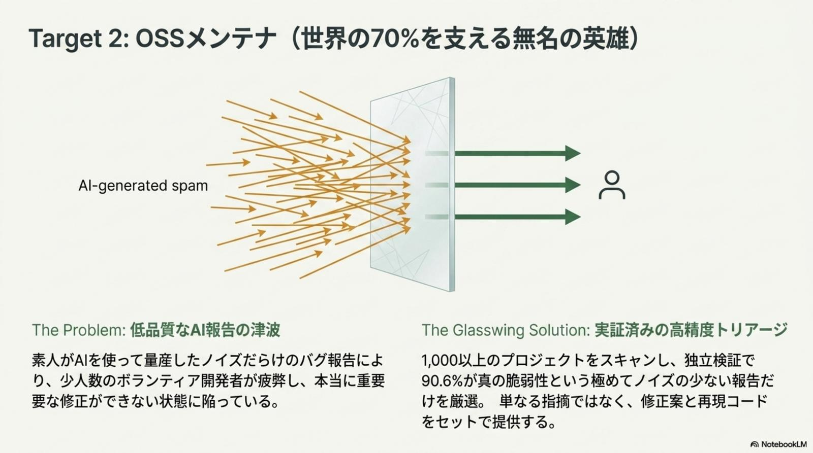
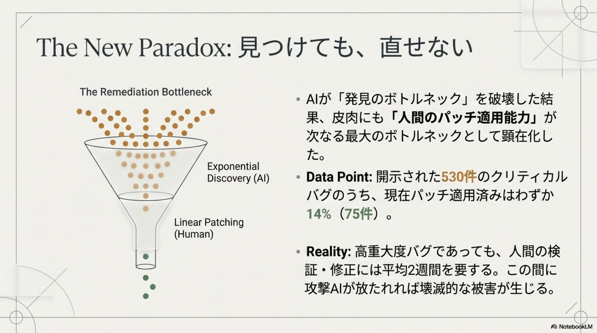
Glasswing は概念実証で終わらなかった。1 ヶ月のパイロット期間で、10,000 件超の高・重大脆弱性、23,019 件の所見、90.6% の真陽性率、Firefox 150 での前モデル比 10 倍の 271 件修正、150 万ドル相当の不正送金エクスプロイト未然防止——定量的に証明された防御側の非対称的優位がここにある。
パートナー全体の高・重大脆弱性 10,000 件超、1,000 以上の OSS プロジェクトでの23,019 件所見、真陽性率 90.6% という人類アナリスト級の精度、Firefox 150 で前モデル比 10 倍の 271 件修正、そしてあるパートナー銀行では Mythos の内部スキャンが150 万ドル相当の不正送金エクスプロイトを未然防止。これらは「AI を導入したら何かが速くなる」という抽象論ではなく、事業に直接届く KPIとして記録された数字だ。
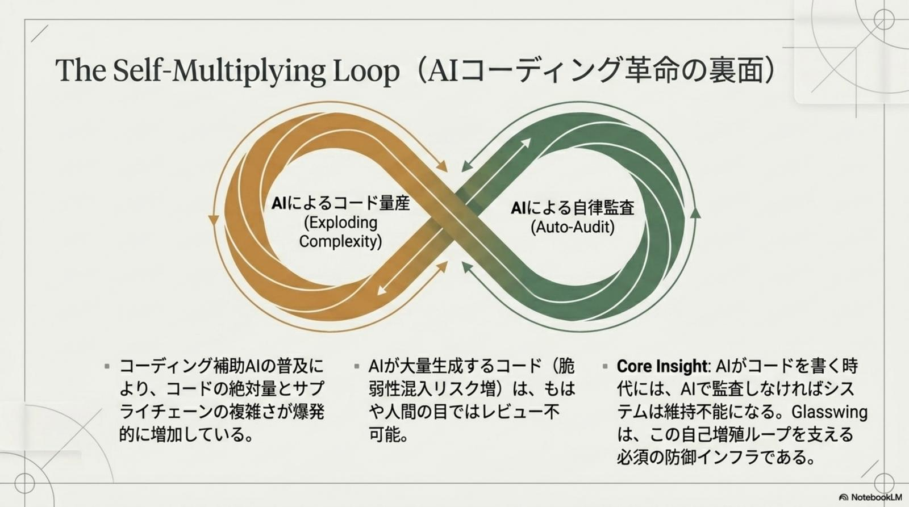
セキュリティアーキテクトのノート：Glasswing の本質は「ゼロデイの大量発見」ではなく、「修正の工業化」と組み合わせた防御サイクル全体の高速化である。Mythos が網羅的に見つけても、修正プロセスが従来通り「人間レビュー → 個別パッチ作成 → 段階的展開」のままなら、Patch Window 死亡という前提に応えられない。Glasswing は発見・トリアージ・パッチ合成・到達可能性分析・自動検証を一つの DAG に圧縮することで、世界に対する防御の Time-to-Patch を物理的に短縮する。
攻撃 AI が一般化するまでの約 18 ヶ月の Safe Zoneを、現場でどう使い切るか。3 つの層すべてに共通する基本動作は「先に硬化し、修正を工業化し、検証を自動化する」。立場ごとに最初の一歩は変わるが、骨格は揃っている。
自社コード・依存 OSS・SBOM を統合し、Mythos が一度に読める形へ正規化。100 万トークンの大規模コンテキストを最大限活かせる入力構造を整える。
Mythos で網羅的スキャンを実行し、所見を真陽性率ベースで自動トリアージ。低品質 AI 報告と本物のゼロデイを物理的に分離する。
AI パッチ合成 → 到達可能性分析 → サンドボックス自動検証の3 工程パイプラインへ流し込む。人間レビューを「事業影響の判断」だけに局所化する。
段階的ロールアウトと AI ネイティブ SOC を組み合わせ、攻撃 AI が一般化する前に世界中のコードを先回りでパッチ。Safe Zone を最大化する。
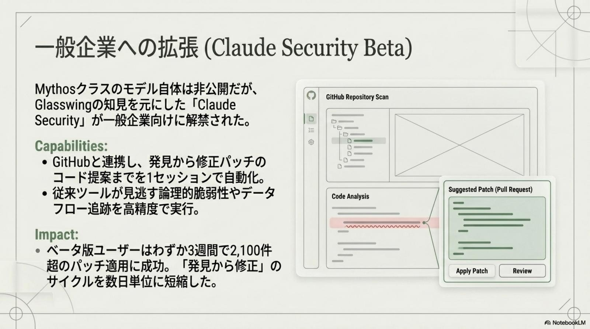
Glasswing が目指すのは個別企業のセキュリティ強化ではない。デジタル社会という土地の地盤沈下を防ぐ取り組み——文明レベルのパッチである。攻撃 AI が一般化する 18 ヶ月後を見据え、SOC は人間中心の警報処理から、AI ネイティブな自律防御へと体質を切り替える。
攻撃 AI 一般化までの 18 ヶ月を、エコシステム全体で「先に硬化させる時間」として使い切る。SOC は警報を読む組織から、AI が一次対応・人間が事業判断に専念する組織へ移行する。「Patch Window is Dead.」を前提とした防御設計が、業界標準として固まっていく。
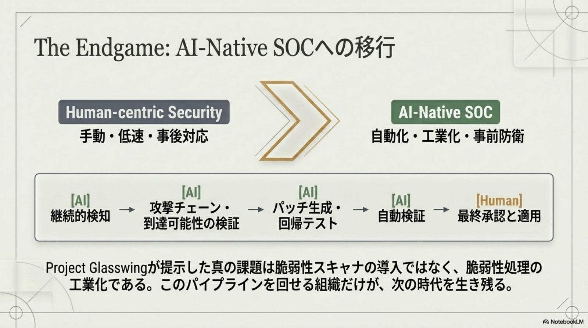
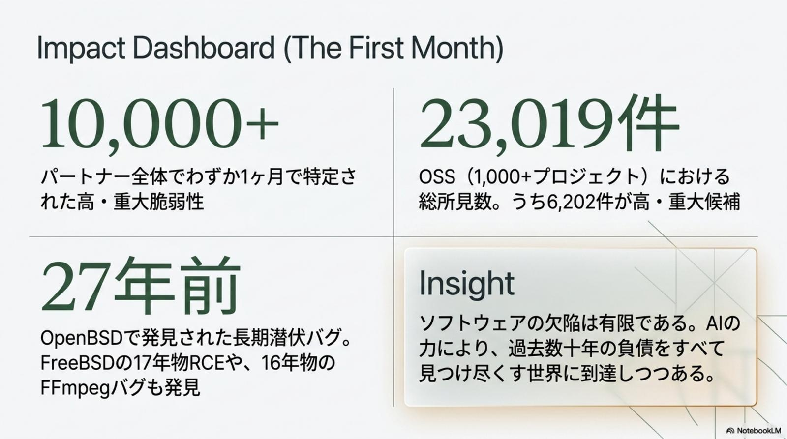
Glasswing が告げるのは、AI 時代のサイバー防衛を成立させるための具体的な作業マップだ。立場ごとに最初の一歩は変わる。
自社の巨大コードベースを Mythos が一度に読める単位へ正規化し、網羅スキャンを既存 SAST/DAST パイプラインに併設。Firefox 150 のように前モデル比 10 倍の修正密度を 1 リリース内で達成する。
低品質 AI バグ報告を機械的に弾き、真陽性率 90.6% のトリアージレイヤーをコントリビューションフローに導入。レビュー帯域を「読むに値する報告」へ集中させ、エコシステム全体の信頼を取り戻す。
「見つける」段階から「修正を工業化する」段階へ昇格。AI パッチ合成 + 到達可能性分析 + 自動検証の 3 工程パイプラインを構築し、人間レビューを事業影響の判断だけに局所化する。
Patch Window 死亡を前提とした新しいガバナンスを策定。「AI ネイティブ SOC のあるべき分業」「文明レベルのパッチ」を業界標準・規制要件として固め、Safe Zone 18 ヶ月のうちに防御側の先行優位を制度化する。
パッチの猶予期間が死んだ世界では、勝者は「速く見つける側」ではなく 「速く修正を工業化できる側」 である。— Project Glasswing · AI 時代のサイバー防衛革命 · 2026-05-23